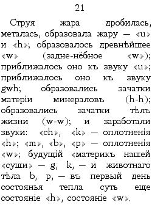

Glossolalia (Section 21)

21
A stream of heat shattered, rushed about, formed a heat -- "u" and "h"; the ancient "w" (the back-palatal "w") was formed; it approximated (came close to) the sound "u"; it approximated the sound gwh; the rudimentary beginnings of the matter of minerals (h-h) were formed; the rudimentary beginnings of bodies of life (w-w) took form; and the sounds began laboring: "ch," "k" are -- the condensation of "h"; "m," "b," "p" are -- condensations of "w"; the future "mainland of our 'dry land'" are -- g, k, -- and of the animal body are b, p, -- on the first day of this constitution of warmth the condition of "h," the condition of "w" still exist.